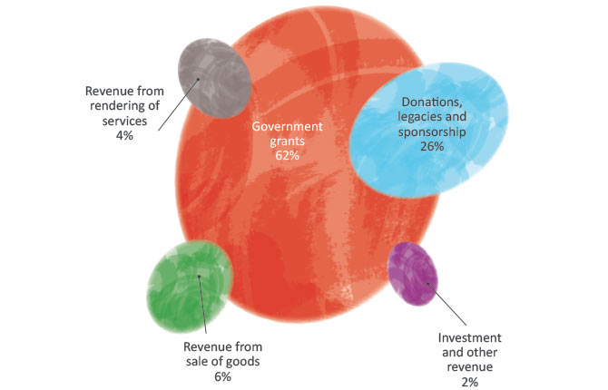
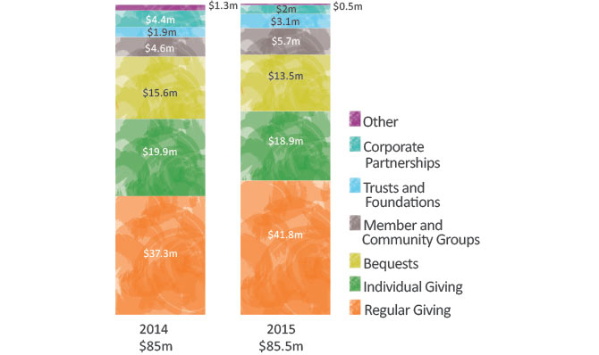
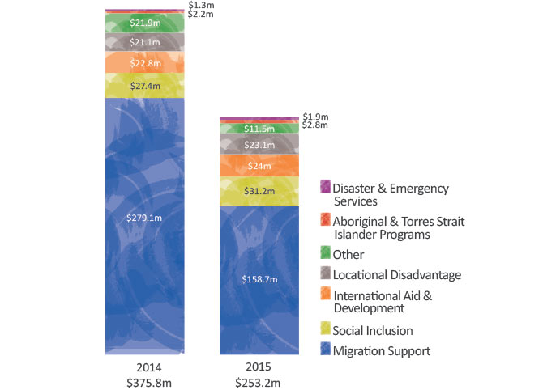

Overall income for the Society’s Humanitarian Services of $407.3 million was $119.6 million (23%) below 2014, reflecting a $122.7 million decline in government funding, largely due to a reduction in funding for migration support programs. Despite this decline, government grants of $253.2 million remain the largest source of income for Humanitarian Services, accounting for 62% of all funding.
Red Cross continues to depend on the financial generosity of the Australian public. Funding from community support has further increased this year to $107.2 million, an increase over 2014, and now accounts for more than one in every four dollars of our funding. A further $24.5 million was derived from the sale of goods, predominantly via the retail store network, and $15.3 million through the provision of training and other services. This income is also supplemented by substantial non-financial support including extensive support from thousands of Red Cross volunteers, gifts in kind and pro bono support from our corporate partners.
Community support for everyday work
Community support for everyday work of $85.5 million was consistent with last year’s income. The largest source of community support for everyday work is donors who so generously make a regular monthly gift. These regular givers donated over $41.8 million, an increase of $4.5 million (12%) on last year. Regular giving accounts for 49% of income received for everyday (non-disaster appeal) work. There was also growth in income attributable to trusts and foundations as well as member and community groups.
Another essential source of support is from generous Australians who leave a gift in their will, with $13.5 million received in 2015 from 285 bequests. Almost two in every three dollars come from the key funding streams of regular giving and bequests.
In addition to community support for everyday work, over $345,000 was raised through disaster appeals in support of people and communities affected by the Syrian crisis, a further $7+ million for those affected by Cyclone Pam in Vanuatu, and over $12 million was donated to help provide relief and recovery from the Nepalese earthquake.

Decrease in Government Grants
Of the $253.2 million received through government funding (excluding the Blood Service), over 95% was for contracted services in areas of need, with the remainder being grants of a commercial nature to support training, employment and disability services.
Overall income from government grants has declined over $122 million (33%) from 2014. This is a direct result of reduction in funding for migration support programs, which now receive $158.7 million through government grants and account for 63% of overall government grant income received. Other areas of service delivery secured modest increases in government funding.
Government funding is secured via competitive tenders, grants and direct approaches to government. All funding from government must meet conditions over the term of each agreement and are subject to regular review.
